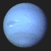

水星
水星是太阳系中最小的行星，也是最接近太阳的行星。它是太阳系中唯一没有卫星的行星。
金星
它是太阳系中唯一没有卫星的行星。金星是太阳系中最热的行星，拥有浓厚的大气层，表面温度极高
地球
水星是太阳系中最小的行星，也是最接近太阳的行星。它是太阳系中唯一没有卫星的行星。
火星
火星是太阳系中第四颗行星，表面有大量的火山和峡谷，气候寒冷。
木星
木星是太阳系中最大的行星，拥有强大的磁场和多个卫星。
土星
土星以其美丽的环系统而闻名，是太阳系中第二大行星。
天王星

天王星是太阳系中第七颗行星，以其独特的倾斜自转轴而著称。
海王星
海王星是太阳系中最远的行星，拥有强烈的风暴和蓝色的外观。